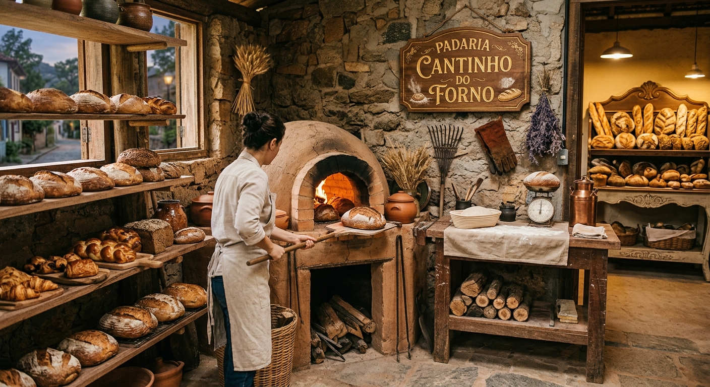

Bem-vindo ao Cantinho do Forno

O Cantinho do Forno carrega a tradição que começou na Mesopotâmia há cerca de 12 mil anos com os primeiros pães rústicos, trazendo sempre receitas fresquinhas e artesanais para a sua mesa.
Aprenda mais sobre a história do pão no site da Associação Brasileira da Indústria de Panificação (ABIP).
Baixe o nosso folheto promocional em PDF: Baixar Folheto Informativo (PDF).